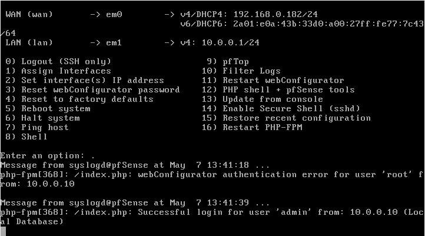
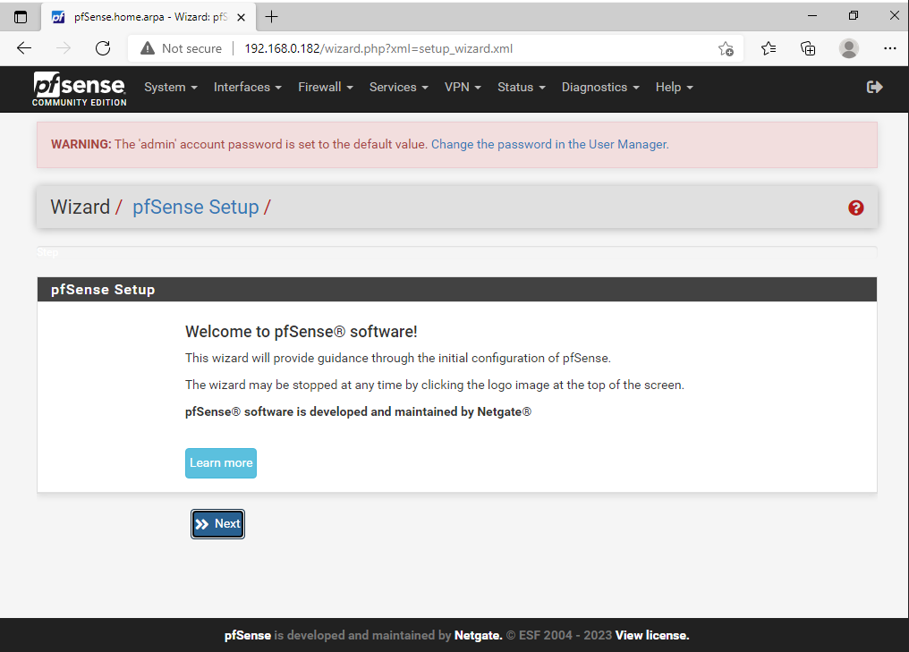

Pfsense
Tout d'abord il faut accepter la licence de pfsense.
Ensuite il faut choisir install pour installer pfsense.
Ensuite il faut choisir le clavier.
Puis faire "continue with..."
Ensuite il faut choisir le disque dur, ici il sera en auto (2FS).
Ensuite il faut choisir "install" pour installer pfsense.
Ensuite il faut choisir "OK" pour confirmer l'installation avec "stripe".
Ensuite il faut choisir "Espace" pour choisir "da0" puis faire "OK" en appuyant sur entrer
Ensuite il faut choisir "YES" pour "destroy".
Ensuite il faut choisir "YES" pour finir.
Ensuite il faut choisir "Reboot" pour confirmer.
Voici les settings utilisé pour la VM pfsense.
Une fois ce menu affiché, il faut choisir "2" pour configurer les adresses ip.
Ensuite il faut choisir "1" pour configurer l'interface WAN.
Ensuite il faut choisir "2" pour configurer l'interface WAN en DHCP.


Ensuite il faut choisir "y" mettre l'adresse ip de: 10.0.0.10 à 10.0.0.254 et choisir "n" pour ne pas configurer l'interface WAN en IPV6. et maintenant vous devez avoir accées à internet et à l'interface pfsense
Et Voila maintenant votre parefeu est prêt à l'emploi cependant veillez à ce que les Vm du reseau interne soit bien compris entre 10.0.0.10 et 10.0.0.254.